Animated UI Maker for WWMI
Welcome to the tutorial for the Animated UI Maker. This tool allows you to create custom animated UI for Wuthering Waves. Depending on the type of animation you want to implement, follow the respective sections below:
I. How to use Team Portrait Tool
If you want to use a short video or gif for your animated portraits, follow these steps:
- Go to the Team Portrait Tool group module.
- Click the Video Editor module, then click the "+" button to add a container. 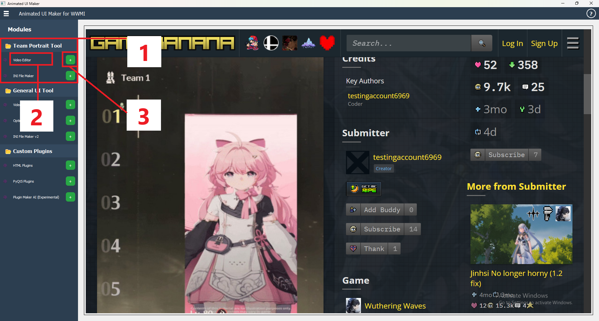
- You can add up to 3 containers in the display area. These simulate what it would look like for your team composition. To remove a container, click the "x" on the top-left of the container.
- To add a gif/video, click the image with red borders. 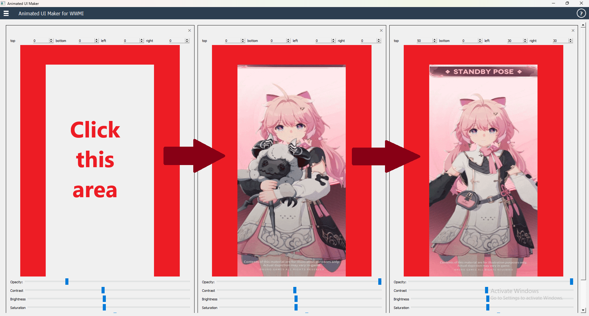 These borders indicate which parts will be hidden by the game.
- Edit the gif/video using the various textboxes and sliders. The top section adjusts the position of the gif/video in pixels, while the bottom sliders control opacity, contrast, brightness, saturation, and rotation. There is also a toggle to reverse the gif/video, and a save button to save your work to the
mediafolder.
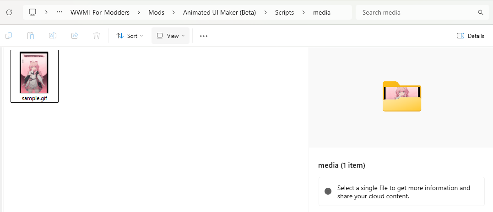
- After saving, go to the INI File Maker module to create the ini file that will animate your team portrait. Click the "+" to add a container.
- Fill in the required information, including the character name and hashes. The character name textbox has suggestions that auto-fill the hash input for convenience. 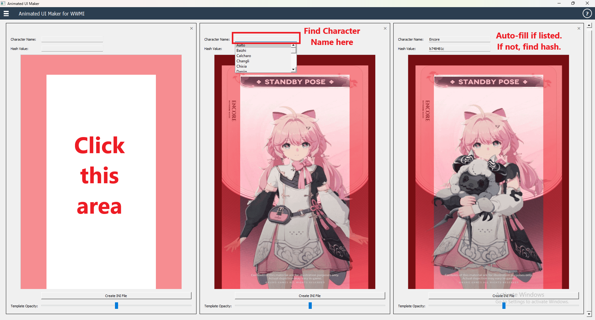
- Click the Create INI File button to generate the frame folders and ini file. These will be zipped, so unzip them into the
Modfolder of WWMI. - You're done! Your custom animated portrait should now work with WWMI.
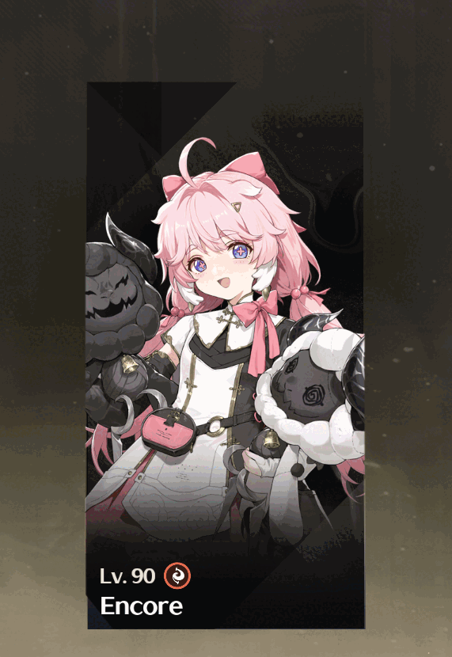
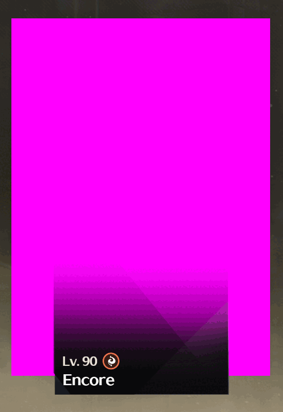
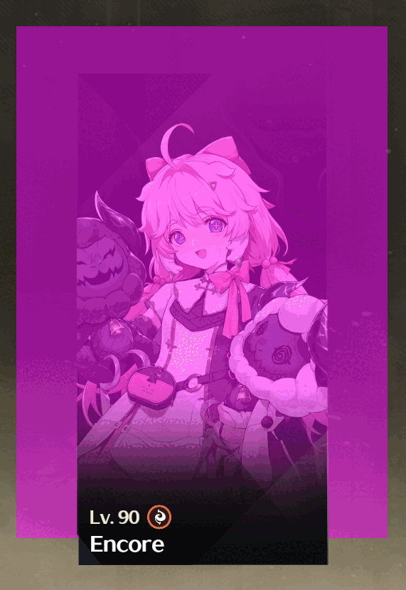

II. How to use General UI Tool
If you have a long video (over 1 minute), follow these steps:
- Open the General UI Tool group module.
- Click the Video Processing module and click the "+" to add a container. You can add up to 3 containers here, though this module can also be used for other game elements. 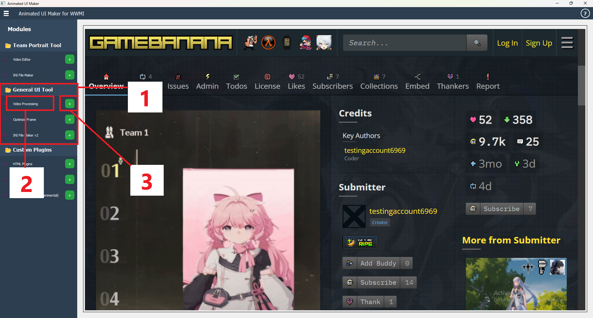
- Fill in the necessary fields as shown in the module container. You will need to:
- Select the video you want to replace the game element.
- Set the target FPS (higher FPS results in more frames but can slow down the game if set too high).
- Set the segment length to split the video into parts for faster processing.
- Specify the output frames folder, which will be generated automatically.
- Click Start Processing once you've filled out the fields.
- Now, optimize the frames to ensure smooth animation. This involves scaling down the frames and converting them to DDS format, which is ideal for game modding.
- In the Frame Optimizing Tool, choose Combined Mode for all-in-one processing. This mode will handle all manual processes, including fixing washed-out frames, in one go.
- Select the frames folder, then choose the scale, how many batches of frames you want to process simultaneously, and set your GPU ID (you can find this in the Task Manager under the Performance tab) and click Convert to DDS.
- Click Start Processing to proceed. 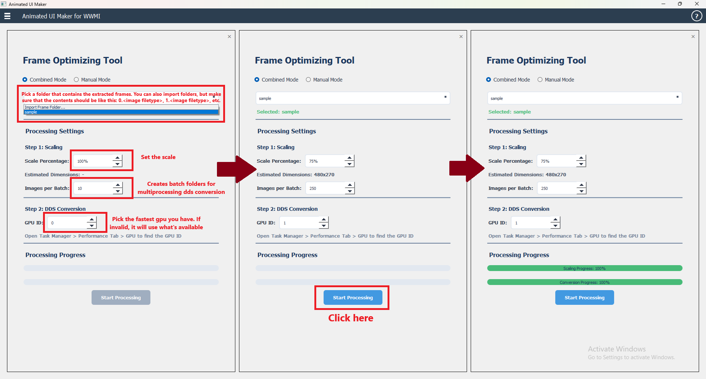
- Next, go to the INI File Maker v2 module to create the ini file for the long animation. 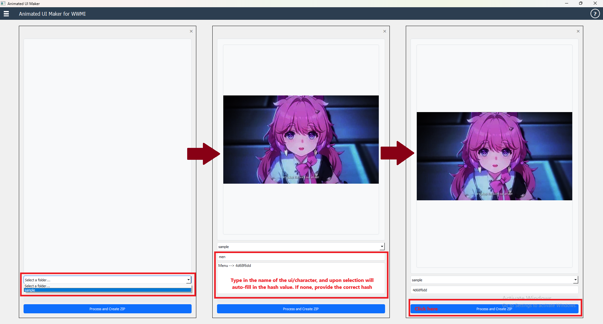
- Select the frames folder and preview the animation. If the frames appear darker, that's normal—these will return to their correct appearance in the game. 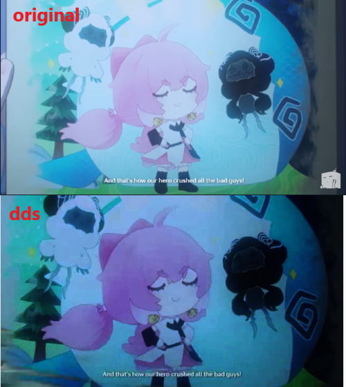
- Enter the character's hash value. You can click on the name textbox to auto-fill the hash.
- Click Process and Create ZIP to finish. The mod is now ready to be placed wherever you need it.
III. How to use Plug-ins Tool
This section is for developers who want to add custom plugins to the tool.
A. HTML Plugins
- Create a folder with a
main.htmlfile inside it. - To import an HTML plugin, click the Import button and select the folder containing the
main.htmlfile.
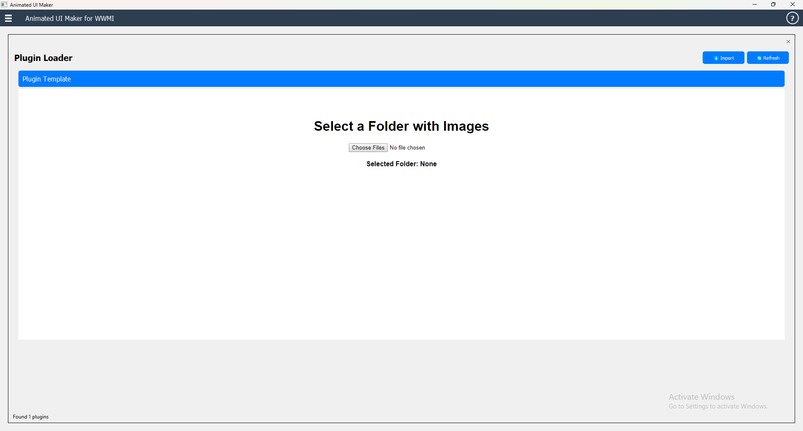
B. PyQt5 Plugins
- Create a folder with a
main.pyfile inside it. The main class must be aQWidgetfor it to work. - Click the Import button and select the folder containing
main.py.
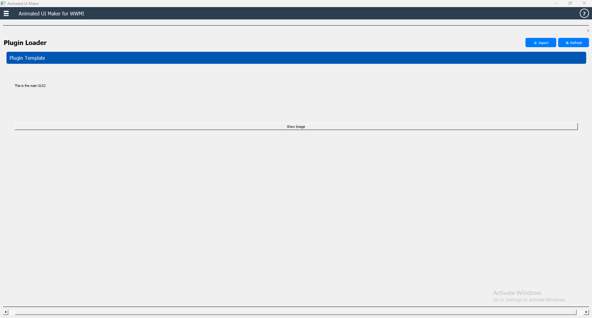
import sys
from PyQt5.QtWidgets import QApplication, QWidget, QVBoxLayout, QLabel
class Main(QWidget):
def __init__(self):
super().__init__()
self.initUI()
def initUI(self):
self.setWindowTitle('Main GUI')
self.layout = QVBoxLayout()
self.setLayout(self.layout)
label = QLabel('This is the main GUI')
self.layout.addWidget(label)
if __name__ == '__main__':
app = QApplication(sys.argv)
ex = Main()
ex.show()
sys.exit(app.exec_())
C. Plugin Maker AI
- Install Ollama and choose a coding model to use (e.g.,
qwen2.5-coder). - Ask the AI to generate the plugin code with the appropriate features, such as including CSS and JS for HTML plugins or using
PyQt5for Python plugins.
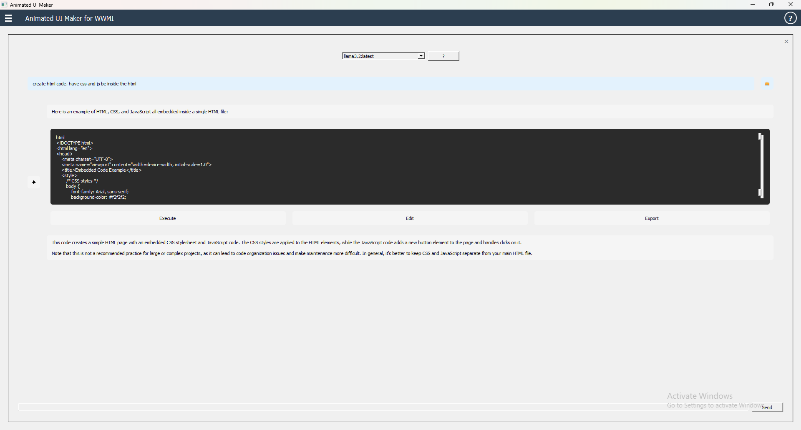
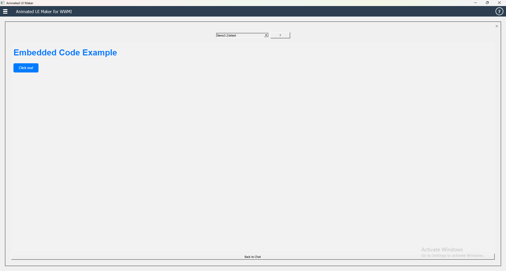
- Edit the generated code and export it as a plugin folder.